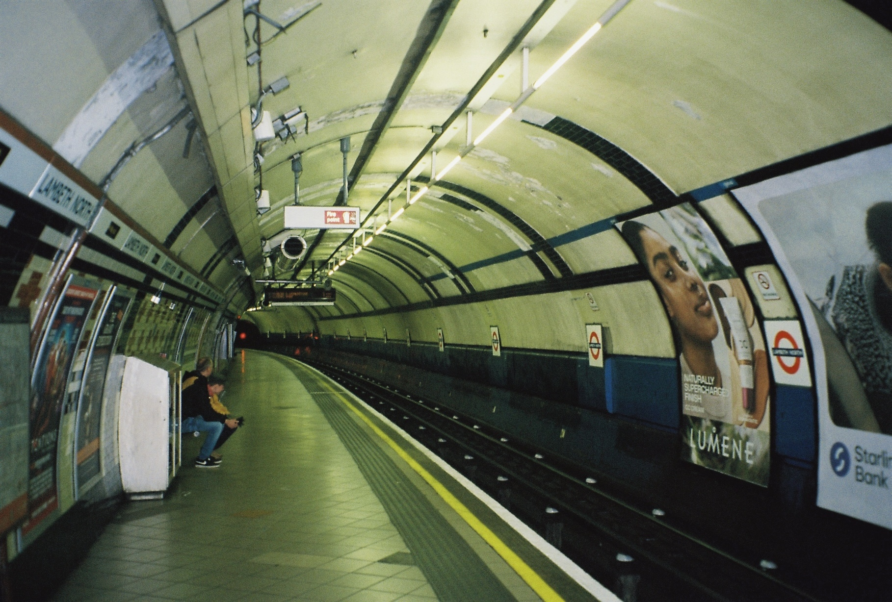
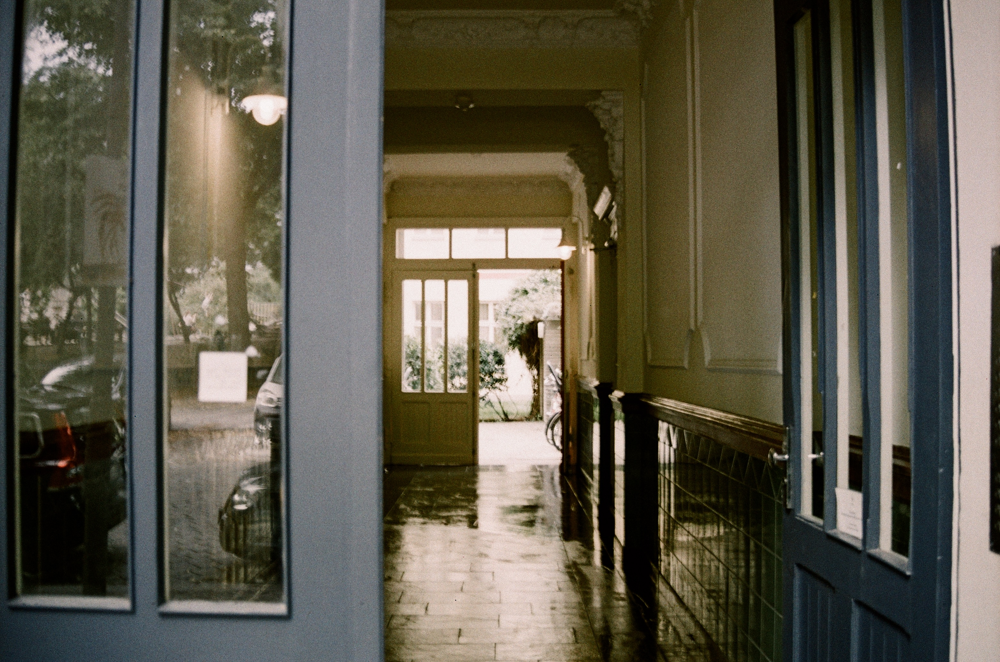
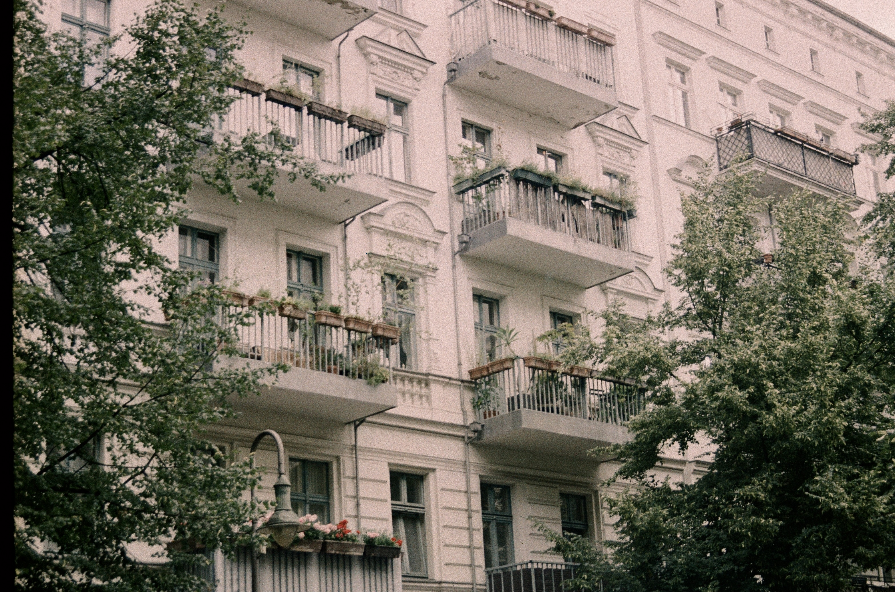
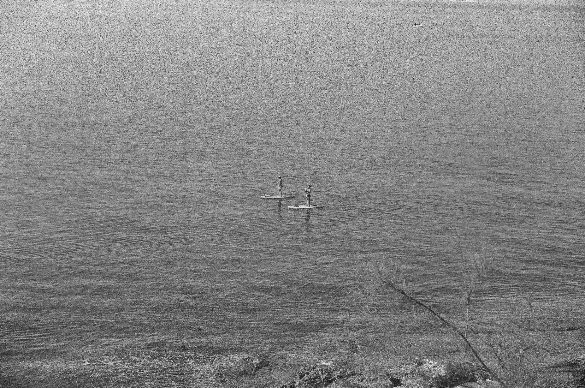
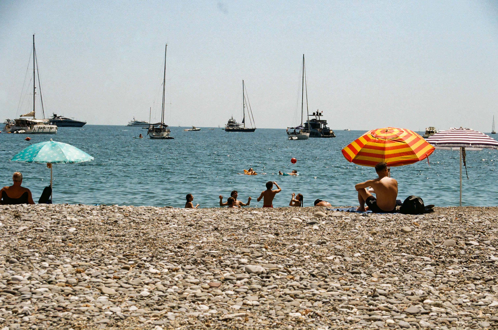
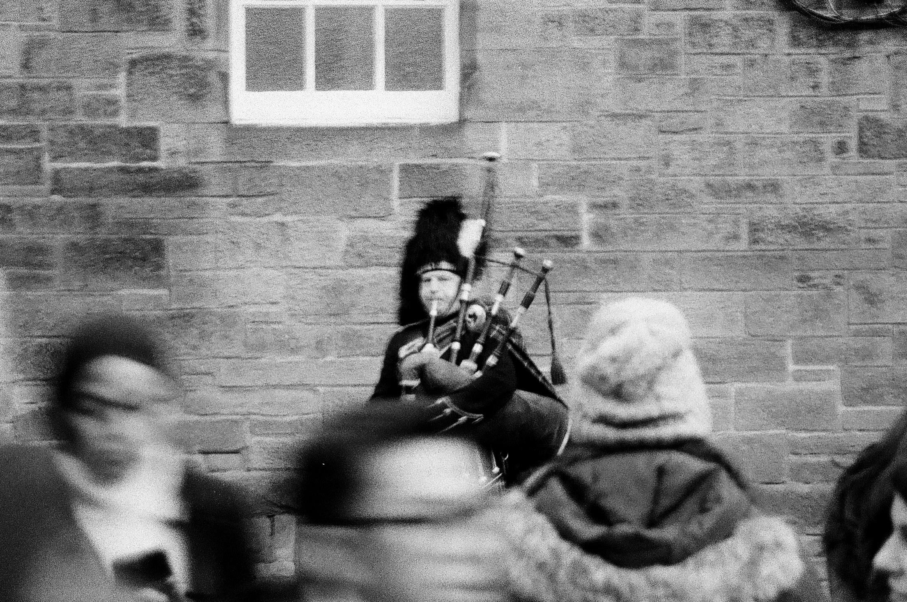

Photography — AMFI
Escaped By The Water, As free as
Narrative photography project.
A series of images that tell a story.
Escaped By The Water, As Free As
She slips out of one world and into another, moving through water as if it were a secret passage to a dream-like realm. It begins in a bathtub of a forgotten asylum, silent and frozen in time, heavy with the echoes of lives once lived. From there, she drifts into a dark forest pond, where shadows ripple and reality softens, bending around her like it is remembering her name.
Along the way, she becomes distorted, lost between what she leaves behind and what she has yet to find. Confusion twists her and pulls at her, but she rises again, tethered to something deep inside herself. The journey bends, blurs, and unfolds until she emerges fully, a wide, imperfect smile on her face, a little wild, a little feral, but utterly free.
A quiet celebration of escape, of reclaiming space, of being finally, completely alive.
Short Fashion Film — AMFI
orchid
Orchid is a short fashion film made during the minor Fashion & Visual culture at AMFI, written and co-directed by me.
The main question of the film is: "What power do we have over our desires?"
Orchids are often linked to desire, sensuality, control, and fragility, but also to precision and cultivation. They are delicate and carefully maintained, yet visually strong and striking.
Photography
Analogue
I enjoy taking 35mm analogue photos in my free time. There's something about the slower process, winding the film, waiting to see how a shot turns out, that makes me pay closer attention to what I'm looking at. I like the imperfections too: the grain, the light leaks, the fact that you can't just delete a bad frame and try again.





